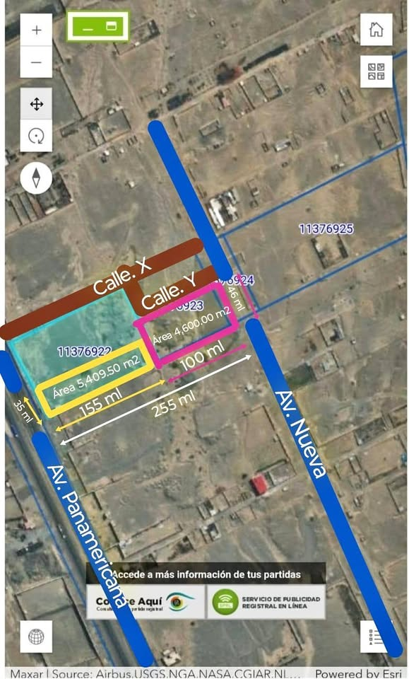

Precio desconocido 4,600 m²

¡¡OPORTUNIDAD ÚNICA DE INVERSION!!!! Vendo Terreno en Villa la Soledad. Área: 10,000 M2 Ubicación: Zona la Soledad - Chicama.- La Libertad Medidas: 34.90 m frontera en Panam. Y 155 m de fondo 46.00 m frontera de fondo. Y 100 m de fondo Tiene Dos Ingresos y/o Salidas por la Panamericana y el otro por la Av. En la parte posterior del terreno según plano. Referencia ubicación. A 5 minutos del óvalo el MILAGRO Servicios: luz y agua a 100 metros Uso: ideal para almacén, depósito, Local Varios Propiedad Inscrita en registros públicos. Venta: Por acciones y derechos (único dueño) Precio: $ 40 USD